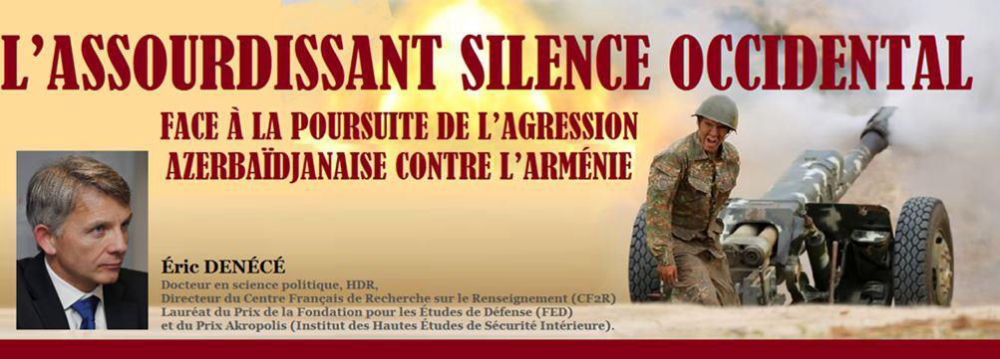
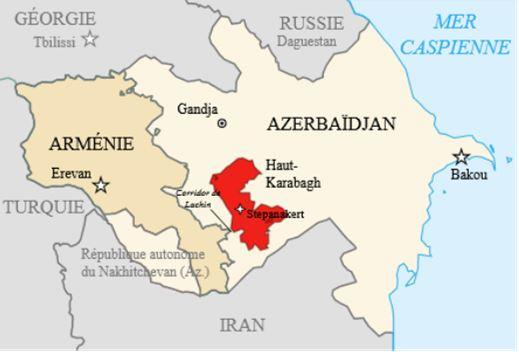
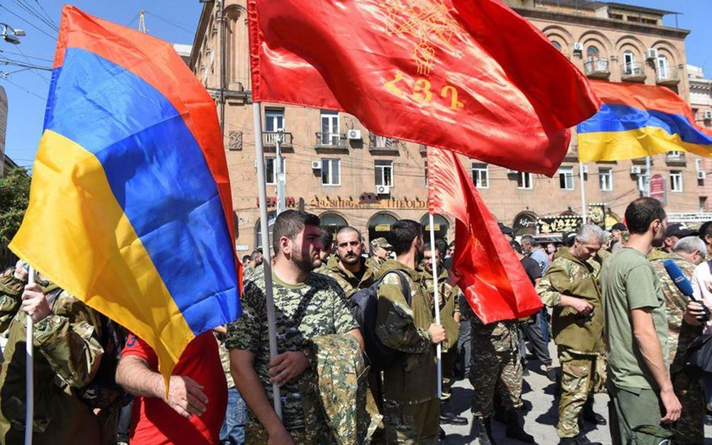
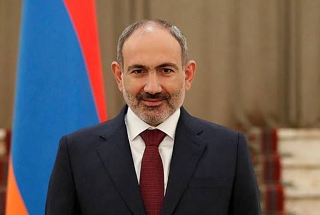
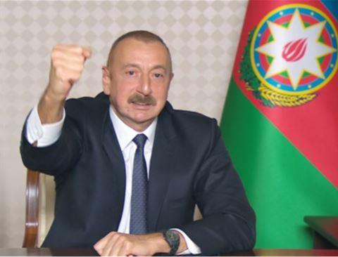
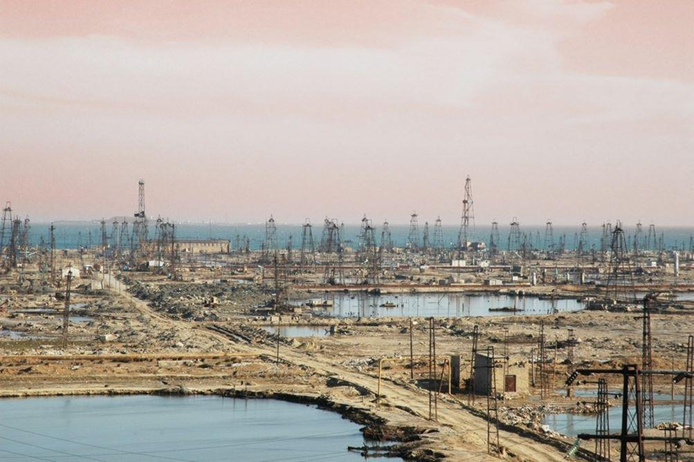

L’assourdissant silence occidental face à la poursuite de l’agression azerbaïdjanaise contre l’Arménie
par Éric DENÉCÉ

Alors que l’OTAN ne cesse de dénoncer ce qu’elle appelle « l’attitude agressive » de la Russie aux marges de l’Ukraine – sans daigner reconnaître aux habitants du Donbass le droit à l’autodétermination que les Occidentaux ont accordé au Kosovars au détriment de la Serbie –, que l’Europe crie au scandale au sujet du « détournement » d’un avion de ligne par les autorités biélorusses afin d’arrêter un journaliste opposant au régime¹ – sans avoir jamais dénoncé le « détournement » de l’avion du président vénézuélien afin d’intercepter Snowden –, force est d’être frappé par l’assourdissant silence des Occidentaux concernant la poursuite de l’agression turco-azérie contre l’Arménie… et l’étonnante passivité de Moscou.
Les incessantes provocations de l’Azerbaïdjan
Fin septembre 2020, avec le soutien de la Turquie et de mercenaires islamistes syriens et du Pakistan, l’Azerbaïdjan a déclenché une violente offensive contre la république autoproclamée de l’Artsakh (ex Haut Karabakh), afin de conquérir les territoires aux mains des Arméniens depuis 1994.
Ce conflit a fait 6000 morts – majoritairement Arméniens – et s’est soldé par une défaite arménienne, Erevan et Stepanakert ayant largement négligé leur défense depuis plusieurs années, face à Bakou qui a largement utilisé ses recettes pétrolières pour renforcer son armée et son arsenal². De plus, près de 200 prisonniers de guerre arméniens sont détenus arbitrairement en Azerbaïdjan dans des conditions insoutenables, indignes de la Convention de Genève.
À la suite du cessez-le-feu signé sous l’égide de la Russie en novembre 2020, les forces azerbaïdjanaises se sont aussitôt déployées dans les territoires reconquis, terrorisant et expulsant les populations arméniennes et multipliant les provocations sur les nouvelles lignes de démarcation. Car Bakou n’est pas décidé à en rester là et vise la prise de contrôle totale de l’Artsakh et une révision des frontières afin d’établir d’une continuité territoriale avec le Nakhitchevan et affaiblir encore davantage l’Arménie. Les tensions persistent donc, en dépit du déploiement de soldats russes. Les deux pays s’accusent mutuellement de nombreuses provocations, chacun niant avec véhémence les affirmations de son ennemi. Toutefois, l’Arménie, en position de grande faiblesse et sans soutien international majeur, n’a ni la volonté ni les moyens de provoquer son voisin et agresseur. C’est donc bien l’Azerbaïdjan et lui seul qui jette actuellement de l’huile sur le feu.
- Le 12 mai, en violation de l’accord de cessez-le-feu, des unités de l’armée azerbaïdjanaise ont pénétré en territoire arménien sur près de 4 kilomètres et occupent désormais des positions autour du lac Sev et sur les hauteurs de Tsghuk et des monts de Mets Ishkhanasar, qui contrôlent le Siunik et le corridor de Latchine. Elles se sont également installées près des villages de Verin Shorja et Kut dans la province de Gegharkounik, toujours en territoire arménien3.
- Le 20 mai des soldats azerbaïdjanais ont poursuivi leur avancée de 1,5 km en territoire arménien en direction du village de Khoznavar, dans la région de Siunik, en direction de Sissian, goulot d’étranglement où le territoire arménien est plus vulnérable à une percée turco-azérie.
- Le 25 mai, un soldat arménien a été abattu lors d’une escarmouche avec les forces azerbaïdjanaises qui avaient une nouvelle fois pénétré en territoire arménien.
- Le 27 mai, six militaires arméniens ont été capturés par les forces azerbaïdjanaises alors qu’ils accomplissaient des travaux de génie défensif dans le district de Guégharkounik, à proximité de la frontière, mais toujours sur le territoire de la République d’Arménie. Le ministère de la Défense azerbaïdjanais a mensongèrement répliqué qu’il s’agissait d’un groupe d’exploration et de sabotage qui tentait d’installer des mines sur les routes d’approvisionnement.

Après que les autorités arméniennes ont déclaré la loi martiale, de nombreux Arméniens sont sortis de chez eux pour se porter volontaire pour la campagne de recrutement de l’armée. REUTERS/Melik Baghdasaryan
Pour Bakou, ces incursions en territoire arménien n’ont rien d’illégal ; il s’agit d’une simple rectification d’un tracé qui n’a jamais fait l’objet d’un consensus. Pourtant, les cartes soviétiques sont formelles : les deux tiers du lac Sev se trouvent bel et bien en territoire arménien.
Les opérations militaires azerbaidjanaises ont été précédées de menaces de recours à la force contre l’Arménie à l’occasion du discours du président Aliev, le 20 avril dernier, exigeant que l’Arménie lui cède un « corridor » pour lier l’Azerbaïdjan avec l’exclave azerbaïdjanaise du Nakhichevan, ce que d’aucuns perçoivent avec crainte comme un projet panturquiste4. Elles ont été suivies par des exercices militaires majeures : 15000 militaires, 300 chars, des centaines de véhicules blindés et de pièces d’artillerie de divers calibres, 50 avions de combat, sans oublier les fameux drones qui firent la différence lors du dernier conflit, ont été déployés aux frontières de l’Arménie5.
Nikol Pashinyan, Premier ministre arménien par intérim, juge la situation explosive. Il appelle sans succès à l'envoi d'observateurs internationaux sur place pour constater ces agressions caractérisées et répétées. Mais l’Arménie est sortie très affaiblie militairement de ce conflit et son dirigeant est sur la sellette : sous la pression de l’opposition, il a dû convoquer de nouvelles élections législatives en juin.
Vu de Bakou, le chaos politique et moral dans lequel est plongée l’Arménie présente une belle occasion d’accroître la pression sur un adversaire affaibli, quasiment incapable de riposter. Les forces armées azerbaïdjanaises pénètrent d’autant plus facilement en Arménie que le nombre de gardes-frontières arméniens est trop faible pour surveiller les nouvelles lignes de démarcation établies par le cessez-le-feu.
Bakou continue ainsi de jouer avec les nerfs des Arméniens, accroissant sa pression sur son voisin, exigeant qu’Erevan renonce à toute revendication sur le Haut-Karabakh, sans qu’aucun Etat ne réagisse, pas plus la Russie, pourtant garante de l’application du cessez-le-feu, que l’Occident. On ne peut manquer de remarquer que lorsque Moscou est accusé de procéder ainsi aux frontières du Donbass, tous les Occidentaux crient à la provocation et à la menace d’invasion… et lui imposent de nouvelles sanctions.
La passivité de la communauté internationale face à une situation explosive
Depuis début mai, Bakou viole allègrement les règles du droit international, les accords de cessez-le feu et multiplie les casus belli. En effet, lorsque les militaires d’un pays ennemi pénètrent dans un territoire souverain pour l’occuper et y capturer des soldats, c’est un véritable acte de guerre.
Nous sommes face à une escalade extrêmement dangereuse pour la paix et la sécurité dans l’ensemble du Caucase du Sud dont l’entière responsabilité relève de la partie azerbaidjanaise. Un embrasement régional n’est pas à exclure. Pourtant, la communauté internationale ne réagit pas. Elle ferme les yeux sur les agissements inadmissibles de Bakou et ne condamne pas non plus l’éthnocide et la destruction systématique du patrimoine culturel millénaire en cours au Haut Karabakh tandis que Bakou s’est opposée à une visite d’experts de l’UNESCO. En comparaison avec la crise ukrainienne, c’est une nouvelle fois « deux poids, deux mesures ».
Face à cette situation, les États-Unis, le Canada et la France ont fait part de leur profonde inquiétude, sans qualifier pourtant l’attitude de Bakou d’acte de guerre. Seule Paris a réclamé un « retrait immédiat des troupes azerbaïdjanaises
du territoire arménien ». Des ambassadeurs d’une dizaine de pays membres de l’UE se sont rendus sur place pour constater de visu les mouvements des troupes azéries mais aucune chancellerie occidentale n’a jugé bon d’évoquer la possibilité d’une interposition militaire dans le cadre d’un mandat de l’ONU6.
Pourquoi une telle passivité ? D’autant, qu’en plus d’être l’agresseur, l’Azerbaïdjan est une dictature, En effet, Ilham Aliyev est un véritable despote, au pouvoir depuis 2003, ayant succédé à son père ; il n’hésite pas à faire kidnapper ou éliminer ses opposants partout dans le monde (Turquie, Géorgie, Belgique, France, etc.), comme peut en témoigner Mahammad Mirzali, youtubeur de 27 ans7, victime de deux tentatives d’assassinat à Nantes, dont la dernière le 14 mars 2021.
Et l’Azerbaïdjan se classe 167e sur 180 pays en matière de liberté de la presse dans le classement de Reporters sans frontières.
C’est aussi, derrière le masque factice d’une république derrière le masque factice d’une république musulmane laïque et ouverte au dialogue des cultures, un État en voie de réislamisation, sous l’influence de prédicateurs wahhabites venus du Daghestan. Bakou a largement flatté l’islam à l’occasion du récent conflit afin d’en faire une « guerre de religion ». L’Azerbaïdjan bénéficie d’ailleurs du soutien massif de la Turquie et du Pakistan, deux États dans lesquels les islamistes radicaux sont aux manettes ou dictent la majorité des décisions du gouvernement8.
Enfin, c’est un État haineux, comme le prouve l’arménophobie instituée en doctrine nationale par le régime d’Aliyev depuis vingt ans, encore illustrée récemment par l’inauguration à Bakou d’un « Parc des trophées » sur cinq hectares, avec des représentations hideuses des soldats arméniens, dans le but de souiller et humilier la mémoire des combattants du camp adverse9. L’Azerbaïdjan a de plus mis en œuvre une politique systématique de nettoyage ethnique dans les territoires reconquis, effaçant toute trace de présence arménienne et multipliant les pratiques vexatoires, menaçantes et cruelles à l’égard des populations demeurées sur place, ce qui démontre que Bakou aspire à l'anéantissement de son voisin et non à la paix10.
Toutefois, cela ne semble poser problème à personne, surtout pas aux Occidentaux. En effet, Mehriban Aliyeva, la première dame, a été décorée par Nicolas Sarkozy en 2011. Et en 2014, François Hollande s’est rendu à Bakou pour saluer Aliyev en dépit des nombreuses protestations des défenseurs des droits de l’homme. La raison en est que l’Azerbaïdjan est devenu un partenaire économique important pour l’Europe et qu’il pratique, grâce à ses recettes pétrolières, une active diplomatie de lobbying, n’hésitant pas à dispenser ses largesses pour promouvoir ses intérêts.

Puits de pétrole à Bakou
De même, personne ne critique Bakou, quand il s’en prend à ses opposants11 et à son voisin en faisant appel aux djihadistes syriens. L’Europe permet sans vergogne que quatre des matchs du championnat d’Europe UEFA 2020 de football se disputent à Bakou – dont un quart de finale – et personne ne parait choqué que le Grand Prix de Formule 1 du 6 juin ait pu y être maintenu dans la capitale d’un Etat violant les règles du droit international et la souveraineté de son voisin. Il est vrai que le PSG est financé par le Qatar – principal sponsor de l’organisation terroriste des Frères musulmans – et que le rallye Paris Dakar a lieu en Arabie saoudite – pays exportateur du wahhabisme. L’idée d’un boycott n’a effleuré personne, car sans doute n’est-elle applicable qu’à la Russie et à ses alliés… Ainsi, l’Occident se comporte avec l’Azerbaïdjan comme il le fait avec les monarchies pétrolières islamistes du Golfe. Tant que ces États signent des contrats, ils ferment les yeux sur leur politique et couvre leurs exactions.
De plus, l’engagement de la Turquie, membre de l’OTAN, aux côtés de l’Azerbaïdjan vient compliquer la donne. Ankara, qui continue de nier sa responsabilité dans le génocide arménien de 1915, a largement appuyé Bakou dans son offensive de septembre 2020, lui fournissant instructeurs et armement. Elle soutient aujourd’hui Bakou dans son objectif de faire disparaître les Arméniens des territoires qu’elle contrôle. Mais là encore, les Occidentaux font preuve d’un inadmissible silence. Pourtant, le Turquie d’Erdogan ne cesse de provoquer l’Union européenne, en remettant en cause les zones économiques exclusives grecques en
Méditerranée orientale et en la menaçant de « lâcher » les réfugiés syriens sur son territoire. De plus, elle alimente la guerre civile libyenne en violant l’embargo sur les armes et continue d’occuper illégalement une partie du territoire syrien, sans être véritablement critiquée. Pire, la Turquie vient d’annoncer la vente de drones Bayraktar TB2 à la Pologne, pays membre de l’UE, de l’OTAN et se revendiquant ouvertement comme catholique… alors même que ces armements ont été largement utilisés au cours du conflit récent contre les Arméniens du Haut Karabakh. Bel exemple de solidarité européenne et chrétienne...
En conséquence, à Erevan, les observateurs les plus lucides considèrent que l’Occident n’interviendra pas dans ce conflit qui semble prendre inexorablement le chemin d’une reproduction des événements tragiques de 1920, lorsque l’Arménie exsangue, attaquée par la Turquie kémaliste, fut partagée entre Russes et Turcs12.
Plus surprenante est l’attitude de la Russie, qui est clairement la seule puissance apte à régler le conflit. Mais plutôt que de faire valoir la force face aux violations du cessez-le-feu conclu sous son égide, elle a relancé les négociations entre les deux pays, lesquelles n’ont pour l’heure abouti à rien. Certes, des effectifs militaires supplémentaires ont été déployés dans les villages frontaliers du Siunik et du Gegharkunik, gage de sécurité pour la population. Moscou a également annoncé qu’elle allait allouer plus de 3 millions de dollars à la reconstruction de certaines infrastructures et de routes dans les villages limitrophes où sont basés les postes militaires russes. Mais pour le moment, la Russie ne fait rien pour contrecarrer les actions azéries. Cette non-assistance à Erevan, en dépit de leur alliance au sein de l’Organisation du traité de sécurité collective (OSTC), est perçue par les Arméniens comme une trahison. Sans nul doute, Poutine fait payer au Premier ministre arménien la volonté qu’il a manifesté de vouloir s’éloigner de son orbite.
Une crise qui pourrait avoir des retombées majeures
Si rien n’est fait, la crise Arménie/Azerbaïdjan pourrait à terme dépasser largement l’affrontement entre les deux États et avoir des conséquences internationales majeures, pour la région du Caucase, pour le monde, mais aussi pour la France. En effet, trois dimensions doivent être mises en lumière.
L’ÉCHEC DU SYSTÈME INTERNATIONAL ET LA CORRUPTION DE L’OCCIDENT
Cette crise met en lumière le fait que le système international, bâti par les Occidentaux, est aujourd’hui inefficace et dépassé lorsqu’il s’agit d’apporter une réponse face à un recours unilatéral à la force. En effet, on observe :
- la négation des droits historiques du peuple arménien sur ses terres ancestrales : non reconnaissance de l’Artsakh, contraire au principe juridique du droit des peuples à disposer d’eux-mêmes ;
- l’absence de réaction face aux violations caractérisées du droit international par l’Azerbaïdjan : refus du droit à l’autodétermination de l’Artsakh, recours à la force, non-respect des accords signés, occupation d’une partie du territoire arménien, etc.
- l’absence de réaction face à la violation des principes de la guerre et des droits de l’homme : atrocités, mercenaires, terreur sur les populations pour les pousser à fuir (guerre de l’eau), conditions de détention des prisonniers de guerre, etc.
- l’absence de protestation et d’intervention face à un nationalisme agressif se caractérisant par une volonté de nettoyage culturel, ethnique et religieux ;
- la non-intervention de l’ONU, qui illustre le fait que la communauté internationale ne veut ou ne peut se faire respecter ;
- la non-intervention de l’OTAN, organisation occidentale, qui laisse l’un de ses États membres (Turquie) encourager un pays musulman militant, agresser un État chrétien et participer à cette action sans aucune réaction ;
- le mercantilisme des Occidentaux, qui ferment les yeux sur l’agression caractérisée de Bakou et renoncent à défendre leurs valeurs pour sauver quelques contrats juteux ;
- le jeu détestable d’Israël, qui n’a jamais reconnu le génocide arménien et qui vend armes et conseils à l’Azerbaïdjan au nom de sa sécurité et de sa rivalité avec l’Iran.
LES RISQUES D’ENGRENAGE
Par sa situation géographique et par les acteurs dont les intérêts s’y trouvent concernés, cette crise pourrait enclencher un fatal engrenage. En effet, des acteurs régionaux majeurs sont aujourd’hui impliqués ou soutiennent, souvent indirectement, les deux belligérants, soit par solidarité, soit afin de s’opposer à la stratégie de leurs concurrents et adversaires internationaux.
Moscou tient à faire savoir qu’elle est la puissance dominante dans cet espace qu’elle considère comme son pré-carré. La Turquie joue avantageusement de son statut membre de l’OTAN, de son rôle de terre d’accueil des réfugiés syriens pour faire avancer son influence dans la région, s’opposant de facto à Moscou et à Téhéran. Parce que l’Azerbaïdjan dispose du soutien de la Turquie et du Pakistan, l’Iran et l’Inde sont aux côtés de l’Arménie, certes de manière discrète. Téhéran a adopté pendant la guerre de l’automne 2020, une attitude prudente en raison de la nécessité de ménager les Iraniens d’ethnie azérie, qui représentent un tiers de sa population13. Toutefois, Téhéran a prévenu Ankara et Bakou que toute modification le long des 35 kilomètres de sa frontière avec l’Arménie représentait une menace sérieuse pour sa sécurité nationale14 comme pour l’acheminement de son commerce extérieur vers la l’Europe et la Russie.
Ainsi, les stratégies antagonistes de ces acteurs pourraient provoquer une véritable crise régionale, voire internationale.
LES CONSÉQUENCES POUR LA FRANCE
Cette crise représente également un enjeu majeur pour la France, à plusieurs titres.
- d’abord c’est un véritable test pour sa diplomatie, membre « impuissant » du groupe de Minsk, qui cherche à enrayer le déclin de son influence dans le monde, d’autant que notre pays a toujours été le protecteur des chrétiens d’Orient et dispose sur son sol d’une importante communauté arménienne ;
- c’est également un test pour sa sécurité, car notre pays est confronté à l’agressivité turque en Méditerranée orientale, en Libye et au Tchad.
De plus, cette crise pourrait avoir des retentissements sur notre sol :
- en raison de l’activisme d’une communauté turque ultranationaliste, de plus en plus islamisée, de plus en plus agressive à l’égard des Français d’origine arménienne et dont l’inféodation est de plus en plus marquée à l’égard du régime d’Erdogan15 ;
- et des tentatives de Bakou qui n’hésite pas à éliminer ses opposants sur notre sol en y faisant intervenir ses sbires.
*
Peu nombreux sont ceux qui perçoivent que la crise Arménie/Azerbaïdjan est un enjeu essentiel de la géopolitique et des relations internationales contemporaines. En effet, par sa situation géographique et par les acteurs qu’elle implique, elle pourrait donner lieu à un fatal engrenage. Elle révèle également l’impotence de l’ONU, incapable de veiller à l’application des règles du droit international et à la résolution pacifique des différends, et la corruption de l’Occident, qui a abandonné ses valeurs au bénéfice d’intérêts mercantiles.
Elle illustre enfin la « guerre de civilisation » qui est à l’œuvre au Moyen-Orient, celle de l’islam conquérant et exclusif qui cherche à s’imposer partout et à effacer les autres religions et civilisations, prolongement dans le Caucase de la « chasse » aux chrétiens que l’on observe dans tout le Moyen-Orient.
La France ne peut rester impassible face à cette situation.
La seule condamnation de l’agression de l’Azerbaïdjan ne suffit pas. Il convient également de faire pression sur la Turquie, son principal sponsor. Nous devons surtout affirmer clairement notre soutien à l’Arménie et lui apporter notre assistance. Ne pas agir reviendrait à mettre notre crédibilité et notre influence définitivement en péril. Espérons que cette fermeté a été signifiée au ministre des Affaires étrangères turc, Mevlüt Çavusoglu, à l’occasion de sa rencontre avec son homologue français à Paris, le 7 juin dernier…
E.D.
NOTES ET RÉFÉRENCES
1. Voir à ce sujet la lumineuse analyse de Slobodan Despot, « Protonmail, le croche-pied suisse dans l’intrigue biélorusse », Antipresse n°288, 6 juin 2021.
2. Voir à ce sujet l’éditorial n°55, « Le conflit Arménie/Azerbaïdjan au Haut-Karabakh relancé par la Turquie », octobre 2020 (https://cf2r.org/editorial/le-conflit-armenieazerbaidjan-au-haut-karabakh-relance-par-la-turquie/).
3. Le district de Guégarkounik, dans l’est de l’Arménie, est frontalier de celui de Kalbajar, dont les forces azerbaïdjanaises ont repris le contrôle fin 2020. Kalbajar et d’autres districts formaient le glacis sécuritaire qui entourait le Haut-Karabakh.
4. En effet, par ce biais, il existerait une continuité territoriale entre la Turquie et l’Azerbaïdjan.
5. John McKenzie, « Caucase : le Siunik est-il un nouveau Dantzig ? », revue Conflits, mai 2021 (https://www.revueconflits.com/caucase-le-siunik-est-il-un-nouveau-dantzig/).
6. J. McKenzie, op. cit.
7. Il a obtenu l’asile politique en France en 2016 après avoir été arrêté à plusieurs reprises dans son pays.
8. Ainsi la France est régulièrement accusée de persécuter les musulmans depuis la loi sur le séparatisme. Chauffée à blanc par des imams radicaux, la population sunnite multiplie les manifestions contre notre pays, brûlant le drapeau tricolore et des effigies d’Emmanuel Macron. Rappelons aussi que dans ce pays, la chrétienne Asia Bibi a été condamnée à mort pour avoir bu de l’eau dans un puits « réservé » aux musulmans et avoir été accusée - à tort - de blasphème. Finalement graciée, elle a dû quitter son pays.
10. Bakou a encouragé pendant le conflit les décapitations, les profanations de cadavres, les exactions contre des civils sans défense, et a fièrement revendiqué ces crimes sur les réseaux sociaux (https://www.lefigaro.fr/vox/monde/guerre-du-haut-karabakh-face-a-la-barbarie-les-armeniens-incarnent-des-valeurs-humaines-20210427).
11. Bien sûr, l’intensité des réactions occidentales est toute différente lorsque Vladimir Poutine s’en prend à certains de ses opposants.
12. J. McKenzie, op. cit.
13. Fin mai, les Pasdarans ont affronté et démantelé un groupe terroriste dans la province de l'Azerbaïdjan occidental, frontalière de la Turquie, de l’Irak et du Nakichevan azerbaidjanais (Renseignor n°1182, 6 juin 2021).
14. Tandis que les Azéris poursuivaient leur pénétration en territoire arménien, des avions de reconnaissance iraniens survolaient la frontière arméno- azerbaïdjanaise (J. McKenzie,op. cit.).
15. Cf. Tigrane Yégavian, Les diasporas turque et azerbaïdjanaise de France, instruments au service du panturquisme, Rapport de recherche n°27, CF2R, janvier 2021 (https://cf2r.org/recherche/les-diasporas-turque-et-azerbaidjanaise-de-france-instruments-au-service-du-panturquisme/).
Partager cette page